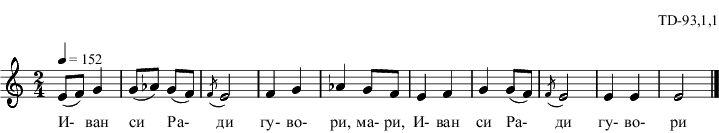

|
Предстоящо |
За проекта |
Пример
1 |
Пример
2 |
Семинар на
проекта |
Конференции |
Име и лого на
проекта и сайта |
Технология |
| Търсачка | Отчети | В. Стоин | Изложба |
|
|
|
|
|
%{ td_093_1_01 } % \include "td-preamble.ly" % \score { \relative c' { \tempo 4 = 152 \time 2/4 e8( f) g4 | g8( aes) g( f) | \acciaccatura f8 e2 | f4 g | aes g8 f | e4 f | g g8( f) | \acciaccatura f8 e2 | e4 e | e2 \bar "|." } \addlyrics { И- ван си Ра- ди гу- во- ри, ма- ри, И- ван си Ра- ди гу- во- ри } % \layout { indent = #0 line-width = 190\mm ragged-right=##f } % \midi { \context { \Score tempoWholesPerMinute = #(ly:make-moment 152 4) } } % \header { opus = "TD-93,1,1" tagline = ##f } } |
|  |
| %Хороводна \begin{multicols}{2} Иван си Ради говори, мари /2 Либе ле Радо либе ле, мари /2 Ден доде Радо ден доде, мари Ден доде де Димитровден Калфите да си излязат мари Калфите от майсторите Аргати от чорбаджи, мари И ас ща Радо да с'ида Мило ли ти е за мени Както я мени за теби. Рада на Иван думаши Либе Иване, Иване Както е тебе за мене Така е мене за тебе Я почакай ма Иване да дойдат пости Коледни Да станат дните мънинки Я пък нощите големки (големи) Да преспа мама и тати и байно с млада невяста Да бръкна майци у пазуви А пък на тейко в джубови Да взема дребно отключи Сандъци да си отключа С имане да се назема Четено и нечетено Бройено и небройено Шиници жълти жълтици Кошове с бели грошове Иван на Рада думаше Либе ле Радо либе ле Не взимай Радо алтъне Че са тежко за носене На зимай жълти жълтици Че са леко за носене. \end{multicols} \sing{Пяла Ивана Вичева Стойкова} \bornYear{1911} \bornVillage{с. Хисаря, кв. Момина баня (Киселери)} \marriageVillage{c. Бегово} \marriageArea{Пловдивско} \marriageYear{1946} \record{декември 1964} |
|
td_093_1_01.ly, td_093_1_01.jpg, td_093_1_01.ps, td_093_1_01.eps, td_093_1_01.pdf, td_093_1_01.mid, td_093_1_01.txt, exam_eps_1.ps, exam_eps_1.pdf |
| No. |
Дата |
час |
място |
водещ |
|
тема |
|
| 1 |
28.01.2010 |
17:00 |
ИМИ, Мултимедийна зала | доц. д-р Николай Киров | ИМИ |
За проекта
и
договора |
|
| 2 |
23.02.2010 |
15:00 |
ИМИ,
Мултимедийна зала |
доц. д-р
Мария Нишева-Павлова |
ФМИ |
Дигитални
библиотеки |
pdf |
| 3 |
09.03.2010 |
17:00 |
ИМИ, Мултимедийна зала | доц.
д-р
Николай
Киров |
ИМИ |
Технологична
среда
за
дигитализация
на
нотни
записи
с
българска
народна
музика (LilyPond за български народни песни) |
pdf |
| 4 |
23.03.2010 |
17:00 | ИМИ, Мултимедийна зала | проф.
Лозанка Пейчева |
ИФ |
Сборници
с нотирани народни песни от България: ново движение на
традициите към дигитални библиотеки (Автентичен фолклор) |
ppt1 ppt2 |
| 5 |
30.03.2010 |
17:00 |
ИМИ, Мултимедийна зала | Кирил
Киров |
Магратеа |
Моделиране
на данни с DataMapper (RUBY за базата данни) |
|
| 6 |
13.04.2010 |
17:00 |
ИМИ, Мултимедийна зала | н.с. І ст. д-р Константин Рангочев | ИМИ | Лингвистични компоненти на дигитална библиотека на българския песенен фолклор |
pptx, odp,pdf |
| 7 |
20.04.2010 |
17:00 |
ИМИ, Мултимедийна зала | д-р
Диана
Данова–Дамянова |
ИИзк |
Записване
на
музикален
фолклор
в
ретроспективен
план
и
съвременното
му
съхранение
чрез
дигитализация (Дигитализация на музика) |
pdf mpg |
| 8 |
04.05.2010 |
17:00 | ИМИ, Мултимедийна зала | н.с. II ст. д-р Григор Григоров | ИФ |
Словеснофолклористични
метаданни
за
описание
на
фолклорни
песни (Задачи в словесния фолклор) |
ppt |
| 9 |
11.05.2010 |
17:00 | ОТМЕНЯ
СЕ! |
доц. д-р Николай Киров | ИМИ | Дискусии
по проекта, подготовка
за конференцията в Сараево |
|
| 10 |
26.05.2010 | 14:00 |
ИМИ |
|
|
Конференцията
в
Сараево |
|
| 11 |
07.06.2010 |
16:00 |
ИМИ, Мултимедийна зала | Ласко
Ласков |
ИМИ |
Защита на
докторска дисертация
не тема: "Разпознаване на невмено писмо в исторически
документи" |
Резултат 13:0 |
| 12 |
09.06.2010 |
14:00 |
ИМИ |
н.с. І ст. д-р Константин Рангочев | ИМИ |
За
командировката
в
Русия |
|
| 13 |
2.11.2010 |
16:00 |
ИМИ, Мултимедийна зала | доц. д-р Николай Киров | ИМИ |
Организационна
сбирка
-
преглед
на
свършената
работа
и
предстоящите
задачи |
|
| 14 |
16.11.2010 [отлага се] |
16:00 |
ИМИ, Мултимедийна зала | Константин Панайотов | ИФ | Българите
в Мала Азия |
|
| 15 |
16.11.2010 (второ заседание) |
16:45 |
ИМИ, Мултимедийна зала | Николай
Киров, Кирил Киров |
ИМИ,
Магратеа |
Достъп
и организация на работа с първични данни |
text |
| 16 |
24.11.2010, сряда | 18:00 | ИМИ, 164 зала | Кирил Киров | Магратеа | Машина за
търсене в първични
данни |
pdf |
| 17 |
10.12.2010 |
16:00 |
ИМИ, 164 зала | Николай Киров | ИМИ | Работна
среща |
text |
| 18 |
22.12.2010 |
16:00 |
ИМИ, Мултимедийна зала | всички |
|
Среща
с
Тодор
Джиджев
и коледно събиране |
text, contents, k_rangochev, text_Grigor |
| 19 |
5.01.2011 | 16:00 |
ИМИ, Мултимедийна зала | Информатици |
|
Работна
среща
на
групата информатици - за дигиталната библиотека За търсене на подобие на песни |
text ppt |
| 20 |
25.01.2011 |
15:00 |
ИМИ,
504 |
Николай Киров | ИМИ |
Създаване
на
речник,
индекси,
показалци
и
онтологии demo.txt index_demo.txt (UTF-8), freq_demo.txt (UTF-8) |
td_141_1_01.txt
(UTF-8) index_td_141_1_01.txt (UTF-8) freq_td_141_1_01.txt (UTF-8) |
| 21 |
02.02.2011 |
15:00 |
ИМИ, 504 | Николай Киров | ИМИ | Работна
среща - литератори |
|
| 22 | 10.02.2011, четвъртък |
16:00 |
ИМИ,
504 |
Николай Киров | ИМИ |
Работна
среща: онтологии и др. Съответствие: текст на песен - музикален запис |
Григор
(doc) Мария (doc) |
| 23 |
24.02.2011 |
16:00 |
ИМИ, 504 | Лозанка,
Николай, Григор,
Константин Р. |
|
Работна
среща - текстове на песни: какво да се променя и как |
Демо-Книга |
| 24 |
15.03.2011 |
15:00 |
ИМИ, 504 |
Лозанка,
Николай, Григор,
Константин Р., Константин П., Диана |
|
Работна
среща
- бележки по редакторската работа над книгата |
dates.txt |
| 25 |
29.03.2011 |
15:00 |
ИМИ |
Н.
Киров |
|
Работна среща | Разлики и бележки |
| 26 |
12.04.2011 вторник |
16:00 |
ИМИ |
Николай, Лозанка, Григор |
ИМИ, ИФ |
Работна среща |
|
| 27 |
1.06.2011 |
17:30 |
ИМИ |
Николай, К. Панайотов |
|
Работна
среща |
|
| 28 |
7.07.2011 |
11:00 |
ИМИ |
Николай, Лозанка |
|
Комплектоване на отчета за 1
етап на договора |
|
|
|
|
|
|
Константин Панайотов | ИФ | Българите в Мала Азия |
|
| Създаден на 26 януари 2010 г. от НКК, обновен на 23 септември 2011 г. |
bg/eng |
nkkirov<at>gmail.com |
home |
math |
{kind=link}
{kind=link}
{kind=link}
{kind=link}
{kind=link}
{kind=link}
{kind=link}
{kind=link}